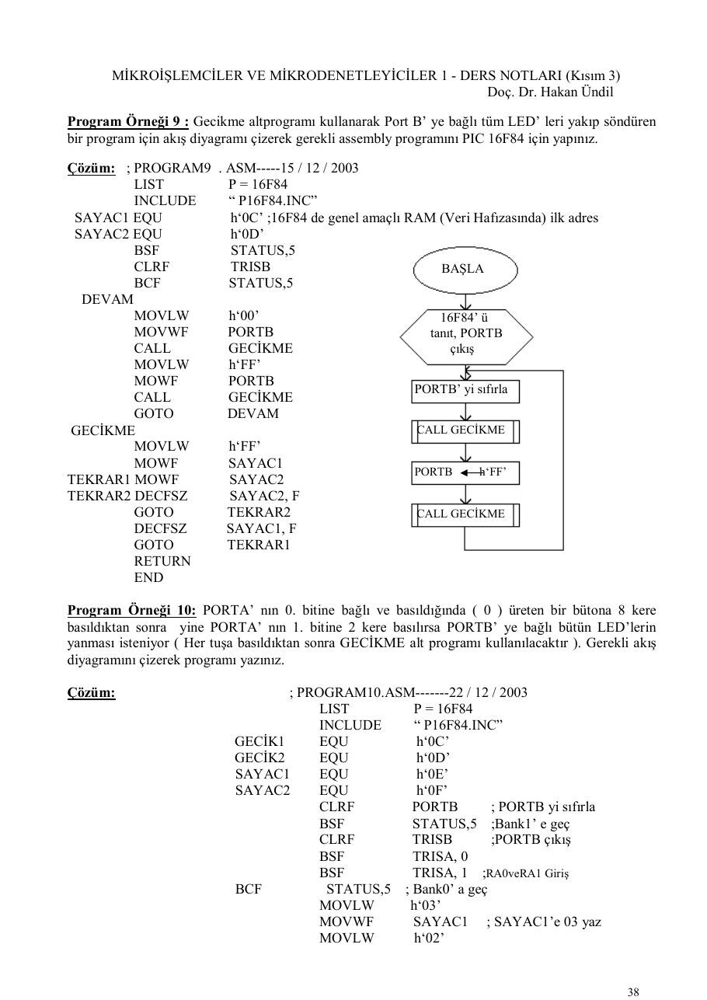
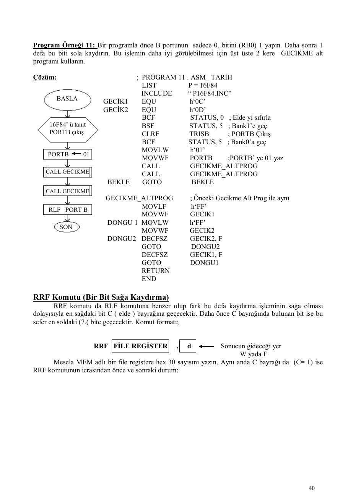
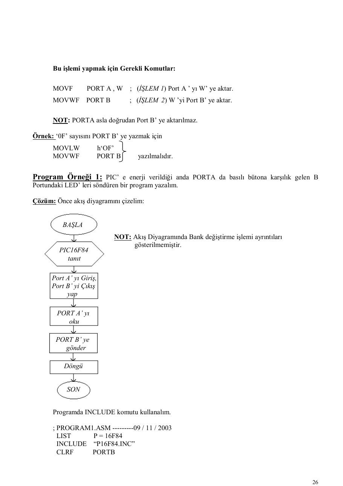
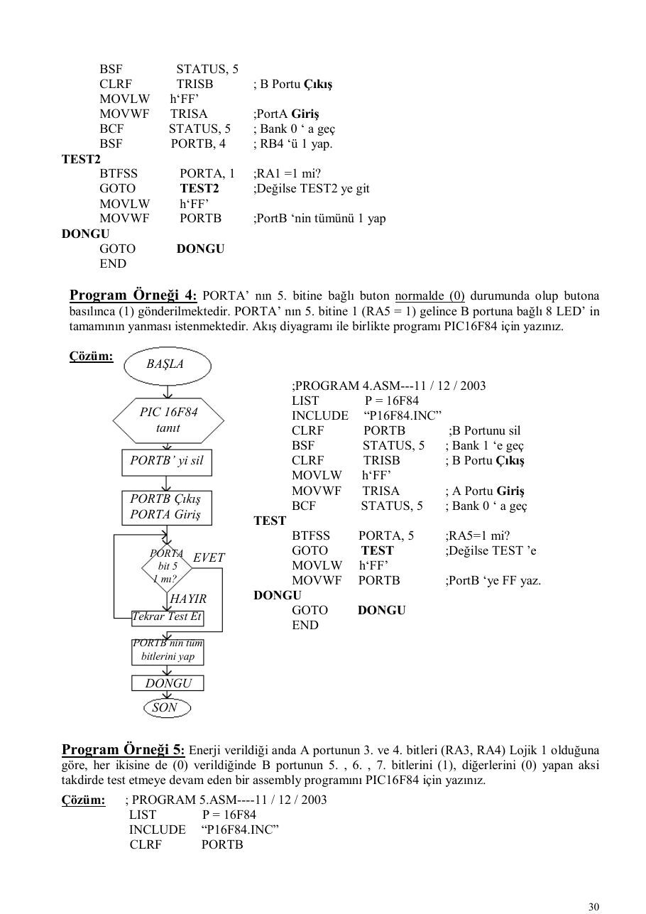

· EEM332
EEM332 Microprocessors: PIC Programming Examples (Hakan Ündil)
EEM332 – Mikroişlemciler · 15.12.2003 · 18.10.2026
This post brings together the relevant notes and applications from the Başkent University EEM332 Microprocessors course archive (2003–2003). It covers INCLUDE files, port settings, bit testing, LED and delay subroutines. Source: Assoc. Prof. Dr. Hakan Ündil, Microprocessors and Microcontrollers 1 lecture notes, 2003. PDF archive copies of the documents and, where available, source codes can be downloaded as a ZIP at the end of the post.
Note: This content belongs to a third-party source; it is shared for archival and nostalgic purposes with attribution. It will be removed at the request of the rights holder.
help2 (1)
MICROPROCESSORS AND MICROCONTROLLERS 1 - LECTURE NOTES (Part 3) Assoc. Prof. Dr. Hakan Ündil
Program Example 9: Draw a flow diagram and write the necessary assembly program for the PIC 16F84 for a program that uses a delay subroutine to turn all LEDs connected to Port B on and off.
Solution: ; PROGRAM9 . ASM-----15 / 12 / 2003
LIST P = 16F84
INCLUDE “ P16F84.INC”
SAYAC1 EQU h‘0C’ ;16F84 de genel amaçlı RAM (Veri Hafızasında) ilk adres
SAYAC2 EQU h‘0D’
BSF STATUS,5
CLRF TRISB BAŞLA
BCF STATUS,5
DEVAM
MOVLW h‘00’ 16F84’ ü
MOVWF PORTB tanıt, PORTB
CALL GECİKME çıkış
MOVLW h‘FF’MOWF PORTB
Clear PORTB
CALL GECİKME
GOTO DEVAMGECİKME CALL GECİKME
MOVLW h‘FF’MOWF SAYAC1
PORTB h‘FF’
TEKRAR1 MOWF SAYAC2
TEKRAR2 DECFSZ SAYAC2, F
GOTO TEKRAR2 CALL GECİKME
DECFSZ SAYAC1, F
GOTO TEKRAR1
RETURN
ENDProgram Example 10: A button connected to bit 0 of PORTA, which produces ( 0 ) when pressed, is to be pressed 8 times; then, if the button on bit 1 of PORTA is pressed 2 times, all the LEDs connected to PORTB are to light up ( the DELAY subroutine will be used after each key press ). Draw the necessary flow diagram and write the program.
Solution: ; PROGRAM10.ASM-------22 / 12 / 2003
LIST P = 16F84
INCLUDE “ P16F84.INC”
GECİK1 EQU h‘0C’
GECİK2 EQU h‘0D’
SAYAC1 EQU h‘0E’
SAYAC2 EQU h‘0F’
CLRF PORTB ; PORTB yi sıfırla
BSF STATUS,5 ;Bank1’ e geç
CLRF TRISB ;PORTB çıkış
BSF TRISA, 0
BSF TRISA, 1 ;RA0veRA1 Giriş
BCF STATUS,5 ; Bank0’ a geç
MOVLW h‘03’
MOVWF SAYAC1 ; SAYAC1’e 03 yaz
MOVLW h‘02’BAŞLA
MOVWF SAYAC2 ;SAYAC2’ye 02 yazDefine the 16F84 TEKRAR BTFSC PORTA, 0 ; RA0 = 0 mı? Port A input GOTO TEKRAR ;Değilse TEKRAR’a Port B output CALL GECİKME ;Evetse GECIKMEye
DECFSZ SAYAC1 ;SAYAC1’i 1 azaltSAYAC1 03 GOTO TEKRAR ; Sonuç 0 değilse SAYAC2 “ 02 DEVAM BTFSC PORTA, 1 ; RA1 = 0 mı?
GOTO DEVAM ; Değilse DEVAM’a
CALL GECİKME ;Evetse GECIKMEyeRA0 = 0 DECFSZ SAYAC2 ; SAYAC2’i 1 azalt NO ? GOTO DEVAM ;Sonuç 0 değilse YES MOVLW h‘FF’
MOVWF PORTB ;PORTB’ye FF yükle
GECİKME
; GECİKME ALT PROGRAMI
GECİKMEDecrement SAYAC1 by 1 MOVLW h‘FF’
MOVWF GECİK1 ;GECIK1’e FF yükleDONGU1 MOVLW h‘FF’ SAYAC1 MOVWF GECİK2 ;GECIK2’ye FF yükle 0 ? NO DONGU2 DECFSZ GECIK2, F ; GECIK2’yi 1 azalt
GOTO DONGU2 ;Sonuç 0 değilseYES DECFSZ GECİK1,F ;GECIK1’i 1 azalt RA1 = 0 GOTO DONGU1 ; DONGU1 ‘e git. NO ? RETURN ; Alt Programdan dön
END ; SON
GECİKMEDecrement SAYAC2 by 1
SAYAC2
0 ? NO
YES
Write FF to PORTB
END
LOGIC OPERATION INSTRUCTIONS
RLF Komutu (Bir bit Sola Kaydırma)The RLF instruction (Rotate Left by One Bit) shifts the bits in a file register one bit to the left. In this case, the leftmost bit ( bit 7 ) moves into the C ( carry ) flag, and the bit previously in C moves into the rightmost bit ( bit 0 ). The instruction format is;
RFL FILE REGISTER , d W or F ( Destination of the result )
If we show the instruction schematically;
Program Example 11: With a program, first set only bit 0 of port B (RB0) to 1. Then shift this bit to the left once. To make this operation easier to observe, use the DELAY subroutine twice in succession.
Solution: ; PROGRAM 11 . ASM_ DATE
LIST P = 16F84
INCLUDE “ P16F84.INC”
BASLA
GECİK1 EQU h‘0C’
GECİK2 EQU h‘0D’
BCF STATUS, 0 ; Elde yi sıfırlaDefine the 16F84 BSF STATUS, 5 ; Bank1’e geç Port B output CLRF TRISB ; PORTB Çıkış
BCF STATUS, 5 ; Bank0’a geç
MOVLW h‘01’PORTB 01
MOVWF PORTB ;PORTB’ ye 01 yaz
CALL GECIKME_ALTPROG
CALL GECIKME CALL GECIKME_ALTPROGBEKLE GOTO BEKLE
CALL GECIKMEGECIKME_ALTPROG ; Önceki Gecikme Alt Prog ile aynı
RLF PORT B
MOVLF h‘FF’
MOVWF GECIK1DONGU 1 MOVLW h‘FF’
END
MOVWF GECIK2DONGU2 DECFSZ GECIK2, F
GOTO DONGU2
DECFSZ GECIK1, F
GOTO DONGU1
RETURN
ENDRRF Komutu (Bir Bit Sağa Kaydırma)
RRF komutu da RLF komutuna benzer olup fark bu defa kaydırma işleminin sağa olmasıThe RRF instruction is similar to the RLF instruction; the difference is that this time the shift is to the right, so the rightmost bit will move into the C ( carry ) flag. The bit previously in the C flag will in turn move into the leftmost bit (bit 7). The instruction format is;
RRF FİLE REGISTER , d Sonucun gideceği yerW or F For example, write the hex number 30 into a file register named MEM. If the C flag is also set at the same time (C= 1), the state before and after executing the
RRF komutunun icrasından önce ve sonraki durum:The program instructions to be used for this operation
MOVLW h‘49’ ; W Registerine (49)16 yükle
MOVWF MEM ; W ‘ yi MEM adresine sakla
RRF MEM, F ; MEM ’ i Sağa bir bit ötele.will be as follows.
Program Example 12: First set the C flag to (1) and shift the PORT B, which has been cleared at the start, to the left one bit at a time. Send the program to the DELAY subroutine between each shift. End the program when the C flag becomes (1) again.
NOT: GECIKME_ALTPROG Gösterilmeyecektir.Solution
; PROGRAM 12.ASM----------TarihSTART INCLUDE “PIC16F84.INC”
BSF STATUS, 5 ; Bank1’e geç
CLRF TRISB ; PORTB ÇıkışDefine the 16F84 BCF STATUS, 5 ; Bank0’ a geç Port B output KAYDIR
RLF PORTB ; PORTB yi sola kaydırC 1 CALL GECIKME_ALTPROG
BTFSS STATUS, 0 ; C bayrağı 1 mi?PORTB 00 GOTO KAYDIR ; Değilse KAYDIR’a
DONGU
RLF PORTB GOTO DONGU ; Evetse burada bekle
END
CALL GECIKMEC=1 ?
END
COMF and SWAPF Instructions With the COMF instruction, the (0)s in a desired file register can be made (1) and the (1)s can be made (0) [the one's complement operation!..]. The instruction format is;
COMF FILE REGISTER , d Destination of the result ( destination ) ( W or F is written )
Example: After loading ( 1F )16 into a register named HAFIZA1, store its inverse ( E0 )16 in HAFIZA2. Write the necessary routine (program segment) for this.
Solution
HAFIZA1
0001 1111
MOVLW h‘0F’
MOVWF HAFIZA1 HAFIZA2COMF HAFIZA1, W
MOVWF HAFIZA2 1110 0000SWAPF komutu ise bir file register içindeki ilk dört bit (Yüksek anlamlı Nibble) ile son dörtThe SWAPF instruction exchanges the positions of the first four bits (high-order nibble) and the last four bits (low-order nibble) in a file register. The instruction format is;
SWAPF FİLE REGISTER , d şeklindedir.Example: Write a program segment that, after writing ( 3F ) to PORTB, swaps the first and last nibbles and writes the result to W.
MOVLW h‘3F’
MOVWF PORTB
SWAPF PORTB, WANDLW KomutuThe ANDLW instruction performs a logical AND operation between the contents of the W register and a constant. It writes the result back to W. As is known, at the end of the operation, the bits that are 1-1 in both numbers result in 1; the others result in 0. The instruction format is;
ANDLW Sabit sayı
şeklindedir.With this instruction, the desired bits of a number ( data ) are made ( 0 ) while the others are left as they are. For this, when selecting the constant ( mask ), the bits to be zeroed should be chosen as ( 0 ) and the others as ( 1 ).
Example: Let the number (3C) be in W. Let us write the instruction that makes bits 2, 3 and 6 of this number (0) and leaves the others unchanged. What is the number in the result? First, without looking at the number in W at all, let us choose a mask in which bits 2, 3, 6 are 0 and the other bits are 1. 7 6 5 4 3 2 1 0
1 0 1 1 0 0 1 1 = (B3)16
The instruction needed to apply logical AND between the number in W (3C) and this mask
ANDLW h’B3’ olacaktır.To find the result, since the number in W is given as (3C)16, we need to write this number with its bits 2, 3 and 6 cleared. This is obtained as (30)16. [Since bit 6 of 3C is already 0, write 3C in binary and clear its bits 2 and 3]
ANDWF KomutuThis instruction is similar to the ANDLW instruction; this time a logical AND operation is performed between W and any file register. The result is written either to W or to F. The instruction format is:
File Register
ANDWF ,d (Sonucun yeri, W ya da F)
şeklindedir.Example: Let the number b’00101100’ be in the PORTB register. Let us also place the value b’11011111’ (mask) in the W register. Let us apply a logical AND operation to these two numbers and write the result back to PORTB.
The program segment needed for this
MOVLW b’00101100’ ; W Registerine 2C yükle.
ANDWF PORTB , F ; PORTB ile W yi AND (VE) işlemine tabi tut
; ve sonucu yine PORTB ye yaz.IORLW Instruction This instruction is used to set a desired bit to 1 while leaving the others unchanged. It performs a logical OR operation between the given constant and the W register and writes the result back to the W register. Instruction Format:
IORLW Constant as follows.
In the constant to be selected for this purpose (the mask), the bits to be set to (1) should be chosen as (1) and the bits not to be changed should be chosen as (0).
Example: Suppose that bits 5, 6, 7 of the number in the W register are to be set to 1 while the other bits are left unchanged. First, let us choose our mask; 7 6 5 4 3 2 1 0
1 1 1 0 0 0 0 0 = E0 (Bits to be set to 1 in the number are 1)
In this case, the necessary program segment (instruction) will be
IORLW b’1110 0000’ .
NOT: Maske seçimi işlemi için W da bulunan sayının bilinmesine gerek yoktur. Hangi sıradakiKnowing the number in W is not necessary for selecting the mask. It is sufficient to know which bits (here 5, 6, 7) are to be set to 1. Since the problem says “the number is in W”, there is no need for a load instruction into W in the program segment.
Example: What would the result be if the number in W in the above example were (04)16?
OR operation between W and the mask: (the result will be E4) Bit No: 7 6 5 4 3 2 1 0 W Reg. 0 0 0 0 0 1 0 0 Mask 1 1 1 0 0 0 0 0 Result 1 1 1 0 0 1 0 0
IORWF Instruction This instruction is also similar to the IORLW instruction; the only difference is that the mask is held in a file register instead of a constant. The result can be written either to W or to the File Register.
Instruction Format
IORWF File Register , d (Destination of the result, W or F)
XORLW Instruction This instruction performs an EXOR (Exclusive OR) operation between the W register and the given constant and
writes the result to W. Instruction Format
XORLW Constant as follows.
This instruction can also be used to invert the desired bits of the 8-bit number in the W register while leaving the other bits unchanged. For this purpose, in the mask byte to be determined, the bits to be inverted should be chosen as (1) and the others as (0).
Example: After first loading the number (3B)16 into W, give the instructions needed to invert only bits 1, 3, 5, 7 of this number and write the result to PORTA. What is the result in this case?
MOVLW h ‘3B’ ;W ye 3b yazXORLW b’10101010’ ; maskede 7,5,3,1. bitler 1, yapıldı
MOVWF PORTA ; Sonuç PORTA ya yazıldı.Between W and the constant (EXOR operation) Bit No: 7 6 5 4 3 2 1 0 W Reg. (3B) 0 0 1 1 1 0 1 1 Mask (AA) 1 0 1 0 1 0 1 0 Result (91) 1 0 0 1 0 0 0 1
XORWF Instruction This instruction is also similar to the XORLW instruction; here the actual number is in the W register and the mask is in the file register. Since the order of operation is not important, it is also possible to write the mask to W and the actual number to the File Register.
NOT: XORLW ve XORWF iki tane 8 bitlik sayının aynı olup olmadıklarını test etmek içinNote: XORLW and XORWF can be used to test whether two 8-bit numbers are the same. If the numbers are the same, the result of the EXOR will be (00)16, so the Z flag will be (1). Otherwise, the Z flag will remain (0). [Remember that the Z flag is bit 2 of STATUS]
Example: If the one-byte number on PORTA differs from (09)16, testing of Port A will continue; if it is equal to (09)16, this number is to be written to PORTB. Necessary program segment:
MOVLW h’09’
TESTXORWF PORTA,W ; W ile PortA ya Lojik EXOR işlemi uygula
BTFSS STATUS,2 ; Z bayrağı 1 mi?
GOTO TEST ; Değilse TEST ‘e git
MOVF PORTA , W ; Evetse PortA yı W ye aktar.
MOVWF PORTB ; W yi PortB ye yaz.For example, if the number arriving at PORTA were (07)16 and the XORWF operation were performed with (09)16;
0000 0111 (07) 0000 1001 (09) 0000 1110 (0E) Result Since the result is different from 0, continue testing.
Similarly, the IORLW and IORWF instructions can be used to compare a one-byte data with zero.
Example: Write a program segment, using an IOR-type instruction, that tests whether the number on PORTA is (00)16, jumps to address ILERI if it is zero, and otherwise continues testing.
TEST
MOVF PORTA ,W ; PortA yı W ye kopyala (yaz)IORLW h’00’ ; W ile 00 arasında Lojik VEYA uygula
BTFSS STATUS , 2 ; Sonuç=0 mı ( Z=1 mi?)
GOTO TEST ; Değilse TEST ‘e git
GOTO ILERI ; Evetse ILERI adresine git.Program Example 13 : Normally all bits of PORTA are (1); write an assembly program, drawing a flow diagram first, that loads (0F)16 into PORTB when all of bits 0, 1, 2 of PORTA (RA0, RA1, RA2) are pressed, and otherwise continues testing. Mask: 0001 1000 [the first 3 bits (0) do not exist in PORTA, the last three bits (0) will be tested]
; PROGRAM13.ASM-------TARİH
LIST P=16F84
INCLUDE “P16F84.INC”
CLRF PORTB
BSF STATUS,5
MOVLW h’FF’
MOVWF TRISA ;PortA Giriş
CLRF TRISB ;PortB Çıkış
BCF STATUS,5 ;Bank0 a geç
TEST
MOVLW b’00011000’ ;Maskeyi W yeXORWF PORTA,W ;PortA ile EXOR
BTFSS STATUS,2 ; Z bayrağı 1 mi?
GOTO TEST ;Değilse TEST e
MOVLW h’0F’ ;Evetse W ‘ ye 0F yaz
MOVWF PORTB ; PortB ye aktar
ENDVARIOUS EXAMPLES
1) For a PIC16F84 that is energized by applying logic 0 to bit 0 of PORTA (RA0), if (FF)16 is subsequently applied to the whole of PORTA, all bits of PORTB will be set to (1); otherwise PORTA will continue to be tested. Draw a flow diagram and write the necessary assembly program.
test edilmeye devam edilecektir. Akış diyagramı çizerek gerekli assembly programını yazınız.
; ORNEK1.ASM
LIST P=16F84
INCLUDE “P16F84.INC”
CLRF PORTB
BSF STATUS,5
MOVLW h’FF’
MOVWF TRISA
CLRF TRISB
BCF STATUS,5
TEST
BTFSC PORTA,0 ; RA0=0 mı?
GOTO TEST ; Değilse TEST’e
BEKLEXORWF PORTA,W ; W ile PORTA aynı mı?
BTFSS STATUS,2 ; Z bayrağı 1 mi?
GOTO BEKLE ; Değilse BEKLE ’ye
MOVLW h’FF’
MOVWF PORTB ; Aynıysa PORTB ye FF yaz
END ; Son2) Write a program that ends by writing (01)16 to the W register if logic (0) from a logic circuit is applied to bit 1 of PORTA (RA1) twice in succession.
The interval between key presses will be obtained by executing 10 NOP instructions approximately 255 times. If the second (0) signal does not arrive immediately after the delay, the test will start over from the beginning. (That is, two (0)s will be awaited again. A subroutine will not be used for the delay.) Write the necessary assembly program.
;ORNEK2.ASM
LIST P=16F84
INCLUDE “P16F84.INC”
SAYAC EQU h’0C’ ; SAYAC için 1 bayt yer ayır.
BSF STATUS,5 ; Bank1 ‘e geç
MOVLW h’FF’
MOVWF TRISA ; PORTA yı Giriş yap
BCF STATUS,5 ; Bank0 ‘a geç
TEST
BTFSC PORTA,1 ; RA1=0 mı?
GOTO TEST ; Değilse TEST ‘e git
MOVLW h’FF’ ; Evetse W ‘ye FF yükle
MOVWF SAYAC ; Sayaca W deki FF sayısını yaz
GECIKME
NOP
NOP
NOP
.. .
NOP ; 10 tane NOP komutu
DECFSZ SAYAC,F ; Sayacı 1 azalt
GOTO GECIKME ; SAYAC sıfırdan farklıysa GECIKME’ye
BTFSC PORTA,1 ; SAYAC sıfırsa, tekrar RA1=0 mı? bak
GOTO TEST ; Değilse TEST ‘e git, yeniden iki 0 bekle
MOVLW h’01’ ; İstenen (01) sayısını W ‘ye yükle
END ; Son3) Write in assembly language a program that, after the 8-bit (1-byte) number on PORTA is shifted left twice, writes (01) to PORTB if the resulting number is (6C)16; otherwise writes (02) to PORTB.
NOT: Başlangıçta C bayrağı (0) yapılacaktır.;ORNEK3.ASM
LIST P=16F84
INCLUDE “P16F84.INC”
BSF STATUS,5
MOVLW h’FF’
MOVWF TRISA ; PortA Giriş
CLRF TRISB ; PortB Çıkış
BCF STATUS,5 ; Bank0 ‘a geç
BCF STATUS,0 ; C Bayrağı sıfır yapıldı.
RLF PORTA,F ; PortA ‘yı 1 bit sola ötele
RLF PORTA,F ; PortA ‘yı 1 bit (kere daha) sola ötele
MOVLW h’FF’ ; W registerine FF yükleXORWF PORTA,W ; W deki (FF) ile PortA daki sayı aynı mı?
BTFSS STATUS,2 ; Z bayrağı 1 ise bir satır atla.
GOTO GIT ; Değilse GIT etiketine git.
MOVLW h’01’YAZ MOVWF PORTB ; PortB ye (01) yaz
GOTO SON ; SON etiketine git.GIT MOVLW h’02’
MOVWF PORTB ; PortB ye (02) yazEND
REFERENCES
1- Microprocessors Lecture Notes 1 - 2 (6502), Assoc. Prof. Dr. Hakan ÜNDİL 2- Microcontrollers and PIC Programming, Orhan ALTINBAŞ 3- Step by Step PIC Programming, Yaşar BODUR 4- PIC Microcontroller Application Circuits, Gökhan DİNÇER 5- PIC16F8X, Microchip PIC Data Sheet, (www.microchip.com)


help3
MICROPROCESSORS AND MICROCONTROLLERS 1 - LECTURE NOTES (Part 2) Assoc. Prof. Dr. Hakan Ündil
INCLUDE FilesWhen writing assembly programs, defining the register addresses with the (EQU) directive made the program both easier to write and easier to understand. However, repeating these definitions every time is unnecessary. By using an Include file instead, we avoid redoing in every program these definitions, which are fixed for every PIC of the same name. For example, the P16F84.INC file contains the definitions required for the PIC16F84 and must be located in the MPASM folder, in the same place as our (.asm) file. In addition to the register address definitions, the Include file also defines the RAM region and describes some bits called Configuration Bits. To use an Include file in our program (for the PIC16F84), it is enough to write the line INCLUDE “P16F84.INC”.
Thanks to the include file, since each bit of (for example) the STATUS register has been given a name:BCF STATUS, 5 instead of
BCF STATUS, RP0 it is possible to write. The same applies to other registers such as INTCON and OPTION.Since the (EQU) directives used for each File Register are no longer needed, our source (assembly) program becomes considerably shorter and simpler. We may need to write an EQU directive only for a variable (such as SAYAC) that we will use in the General Purpose RAM region.
CONFIGURATION BITS
These bits determine the rules that apply at the moment power is applied to the PIC. For example, if we are going to use the clock (oscillator) of our PIC circuit as an RC type, we must declare this in the program. Similarly, these configuration bits are used to enable or disable the Watchdog timer, to enable or disable the Power-on Reset feature, and to enable or disable code protection. In fact, the configuration bits can also be set directly during programming without being written in the program. This is because all programmer software offers this facility. If we want to give the Configuration Bits as a line within the program, an example of how this directive is written is as follows
can be given
_CONFIG _CP_ OFF & WDT_OFF & PWRTE_OFF & RC_OSC
Code Protection Off Watchdog Timer OFF Power-on Reset Off Oscillator Type (RC)
& : means “and”. _ : The underscore is used in place of a space. OFF : means none, disabled.
DATA TRANSFER OPERATIONS
In the PIC, data transfer operations are carried out through the W register.
Example
OPERATION 1 OPERATION 2
W Reg.
PORTB
PORTA
Commands required to perform this operation
MOVF PORT A , W ; (OPERATION 1) Transfer Port A to W.
MOVWF PORT B ; (OPERATION 2) Transfer W to Port B.NOTE: PORTA is never transferred directly to Port B.Example: To write the number ‘0F’ to PORT B
MOVLW h‘OF’
MOVWF PORT B must be written.Program Example 1: Let us write a program that, at the moment power is applied to the PIC, turns off the LEDs on Port B that correspond to the buttons pressed on PORTA.
Solution: First let us draw the flow diagram
START
NOTE: The details of the Bank switching operation are not
shown in the Flow Diagram.
PIC16F84
declareMake Port A input, Port B output
Read PORT A
Send to PORT B
Loop
END
Let us use the INCLUDE directive in the program.
; PROGRAM1.ASM ---------09 / 11 / 2003
LIST P = 16F84
INCLUDE “P16F84.INC”
CLRF PORTBBSF STATUS,5 ; Switch to BANK 1
CLRF TRISB ; Port B all output
MOVLW h‘FF’
MOVWF TRISA ; Load FF into TRISA, PORTA fully Input.
BCF STATUS,5 ; Switch to BANK 0
OKU
MOVF PORTA,W ; Read PORTA and write the result to W
MOVWF PORTB ; Write W to PORT B (copy)
DONGU
GOTO DONGU ; Infinite Loop, it could also be called GOTO OKU
END ; EndSteps Required for Practical Implementation
1) Write the program and save it as PROGRAM1.ASM.
2) Compile with MPASM to obtain the (PROGRAM1.hex) file. Paying attention to the configuration bits, insert the PIC into the programmer and load the program. For the configuration bits, the following can be written: Oscillator type : RC PWRT : ON WDT : OFF CP : OFF
Note: Since an INCLUDE (.INC) file is used, do not forget to make sure that the 16F84.INC file is also in the same folder (directory).3) Build the circuit as shown below.
NOTE 1: The RA0 and RA3 inputs are also connected to the (+) supply. That is, they receive Logic 1.
NOTE 2: In PIC circuits, the supply voltage (+ 5V) must be connected to ground with a capacitor of at least 0.1 F.4) Without powering the circuit, press the A1, A2, A4 buttons singly or together.
5) Examine the relationship between the pressed button and the LED beside it.
NOTE: If no button is pressed, it will be seen that the Port A bits light the LEDs because of the external pull-up resistors (10k).This is because port A is normally (1) and becomes (0) when pressed.
6) When changing the state, first press the buttons you want, then RESET.
Infinite Loop: Since the PIC16F84 has no halt instruction, a Loop is used. If, instead of waiting in the program, we want the states of the buttons to be read again,
DONGU
GOTO DONGU instead of the commandGOTO OKU we can write. Now, without needing a RESET, we will see the LEDs change as we press the buttons.BIT TESTING FOR DECISIONS
A bit in any register can be tested with the BTFSC and BTFSS instructions, and depending on the result, the program may either continue from the next (following) line or skip one line (the program is Branched).
BTFSC Instruction: In English, this instruction means “Test the File Register bit; if this bit is (0), skip thenext instruction.”
Instruction Format: 7, 6, 5, 4, 3, 2, 1, 0
BTFSC File Register ,f b (a number from 0 to 7)
Let us examine how the instruction works, together with a flow diagram, for an example program fragment:
:This program fragment tests bit 3 (RA3) of PORTA; if this bit is (0), it sets bit 5 of PORTB to (1); otherwise, it continues testing.
PORTA, TEST
Yes bit 3 BTFSC PORTA, 3 is 0? GOTO TEST
BSF PORTB, 5
NoTest Again NOTE: It is assumed that PORTA and PORTB have been defined beforehand.
Set bit 5 of PORTB to (1)
BTFSS Instruction: This instruction is similar to the BTFSC instruction. However, it tests whether the file register bit is (1) instead of (0). If this bit is (1), the instruction following (next to) the instruction is skipped; if not (0), execution continues from the next instruction.Program Example 2: (For the same circuit as above)
Let us write a program that lights the LEDs (RB0,.........,RB4) of port B when the button on bit 2 of port A is pressed.
Solution
; PROGRAM 2.ASM------08 / 12 / 2003
LIST P = 16F84
INCLUDE “P16F84.INC”START CLRF PORTB
BSF STATUS, 5
CLRF TRISA
MOVLW h‘FF’Declare the PIC16F84
MOVWF TRISA
BCF STATUS, 5
TESTClear port B BTFSC PORTA, 2
GOTO TEST
MOVLW h‘0F’Make PORT A Input,
MOVWF PORTBPORT B Output
ENDIs bit 2 of PORT A 0? Yes No Test again
RB0,.....RB4
Set to (1)
END
Program Example 3: Write a program that, after power is applied with the button connected to bit 1 (RA1) of PORTA held pressed, lights the LED connected to RB4 (LED4) of PORTB, and then, when the button is released, lights all the LEDs of PORTB. [When the button is not pressed, the inputs of PORTA are assumed to be (1).]
( Continued on the Next Page)
-;PROGRAM3.ASM----08/12/ 2003
LIST P = 16F84
INCLUDE “P16F84.INC”BSF STATUS, 5
CLRF TRISB ; Port B Output
MOVLW h‘FF’
MOVWF TRISA ;Port A Input
BCF STATUS, 5 ; Switch to Bank 0
BSF PORTB, 4 ; Set RB4 to 1.
TEST2
BTFSS PORTA, 1 ;Is RA1 =1?
GOTO TEST2 ;If not, go to TEST2
MOVLW h‘FF’
MOVWF PORTB ;Set all of Port B to 1
DONGU
GOTO DONGU
ENDProgram Example 4: The button connected to bit 5 of PORTA is normally in the (0) state and sends (1) when pressed. When bit 5 of PORTA becomes 1 (RA5 = 1), all 8 LEDs connected to port B are to light. Write the program for the PIC16F84 together with the flow diagram.
Solution
START
;PROGRAM 4.ASM---11 / 12 / 2003
LIST P = 16F84PIC 16F84 INCLUDE “P16F84.INC”
declare CLRF PORTB ;Clear Port B
BSF STATUS, 5 ; Switch to Bank 1Clear PORTB CLRF TRISB ; Port B Output
MOVLW h‘FF’
MOVWF TRISA ; Port A InputPORTB Output
BCF STATUS, 5 ; Switch to Bank 0PORTA Input TEST
BTFSS PORTA, 5 ;Is RA5=1?PORTA YES GOTO TEST ;If not, go to TEST bit 5 MOVLW h‘FF’ is 1? MOVWF PORTB ;Write FF to PortB.
NO DONGU
Test Again GOTO DONGU
ENDMake all bits of PORTB
DONGU
END
Program Example 5: Given that bits 3 and 4 of port A (RA3, RA4) are Logic 1 at the moment power is applied, write an assembly program for the PIC16F84 that sets bits 5, 6, 7 of port B to (1) and the others to (0) when both of them are given (0), and otherwise continues testing. Solution: ; PROGRAM 5.ASM----11 / 12 / 2003
LIST P = 16F84
INCLUDE “P16F84.INC”
CLRF PORTBBSF STATUS, 5 ; Switch to Bank 1
CLRF TRISB ; PORTB all Output
MOVLW h‘FF’
MOVWF TRISA ; PORTA Input
BCF STATUS ; Switch to BANK 0
TEST
BTFSC PORTA, 3 ; Is bit 3 of PORTA 0?
GOTO TEST
BTFSC PORTA, 4 ; Is bit 4 of PORTA 0?
GOTO TEST
MOVLW b‘11100000’ ; Load h‘E0’ into W.
MOVWF PORTB ; Load (E0) into PortB
DONGU
GOTO DONGU
ENDUSING LOOPS
Sometimes it may be desired to repeat a certain operation or operations a specific number of times. In such a case, a register is used as a COUNTER. Generally, after the repeat count is loaded into the (SAYAC), the Loop is continued by decrementing (SAYAC) by 1 each time until (0) is reached. For this purpose the
DECFSZ instruction must be used.Each time this instruction is executed, this register (here SAYAC) is decremented by 1, and when SAYAC = 0 the next instruction is skipped. Otherwise (if SAYAC ≠ 0) the instruction immediately following (next to) the DECFSZ instruction is executed.
The format of this instruction
DECFSZ Counter , d W or F is as shown.In the program fragment below, it is assumed that SAYAC has been defined earlier and loaded with a certain value (the number of loops). When the loop ends, (FF) is loaded into PORTB.
.
SAYAC = SAYAC - 1 .
TEKRAR
DECFSZ SAYAC, FSAYAC YES GOTO TEKRAR
is 0? MOVLW h‘FF’
NO MOVWF PORTB
Repeat . . Set Port B to FF
Program Example 6: It is desired that the LED connected to bit 0 of PORTB be lit after the button connected to bit 2 of PORTA has been pressed 10 times (a wait of 25 periods is desired between each button press. In this way, the noise arising from the button is prevented, and counting 10 times at once on a single press is avoided). Write the required program in assembly language for the PIC 16F84.
Solution: : ; PROGRAM 6.ASM-----20 / 12 / 2003
LIST P = 16F84
INCLUDE “P16F84.INC”
SAYAC EQU h‘0C’ ; First address of general purpose RAM
CLRF PORTB
BSF STATUS, 5
CLRF TRISB
MOVLW h‘FF’MOVWF TRISA
BCF STATUS, 5
BASLA
MOVLW d‘10’
MOVWF SAYAC
TEST
BTFSC PORTA, 2 ; Is RA2= 0?
GOTO TEST ; If not, keep testing
NOP ; Do nothing
.. ; . ;(NOP : No operation. For a 1-period delay) . .
NOP ; There are 25 NOP instructions in total.
DECFSZ SAYAC, F ; Decrement the counter by 1; is the result 0?
GOTO TEST ; If not, go to TEST
BSF PORT B, 0 ; If yes, set bit 0 of PORTB to 1.
DONGU
GOTO DONGU
ENDIn the example above, 25 NOPs were used. In such a system, if the wait time between two presses is to be increased, this number is increased. However, in this case we run into a problem such as unnecessarily filling the memory. Instead, by defining a second counter, a small number of NOPs (3 in the example below) can be executed many times (for example 255 times). For this, the bit 2 of STATUS, which is
Set SAYAC 2 to FF
3 NOP instructions
SAYAC2 =
SAYAC2 - 1
NO
SAYAC 2
is 0?
YES
Decrementing SAYAC1 and the rest are the same; there is one more loop on the outside
COMPARISON OPERATION AND LOOPS
The SAYAC does not always count downward. In cases where SAYAC increases in each loop, the SAYAC value must be compared with a desired number. When equality is achieved, the loop is terminated. As an example, let us arrange a loop (cycle) labeled tekrar that is repeated ( 09 ) times: ( Program fragment )
............ ............ Clear SAYAC CLRF SAYAC
TEKRAR
Increment SAYAC by 1 INCF SAYAC, F ; Increment SAYAC by 1
MOVLW h‘09’
SUBWF SAYAC, W ; Subtract W from SAYACW h‘09’ BTFSS STATUS, 2 ; Is the Z flag 0?
GOTO TEKRAR ; If not, go to TEKRARSubtract SAYAC from W DONGU
GOTO DONGU ; If yes, wait here
STATUS
ENDNO Is bit 2 1?
YES
END
In the program, SAYAC indicates the number of repetitions up to that point. With the subtraction instruction SUBWF, the Z (Zero flag) and C (Carry flag) located in the STATUS register are affected.
2 0
STATUS
Register Z C Carry flag
Zero flag
SUBWF Instruction:This instruction subtracts the contents of the W register from the contents of the File register at that moment and writes the result to W or the file register. Instruction Format;
SUBWF File register , W or fAs a result of the subtraction, the values of the Z and C flags carry the information about the relationship between the two numbers subtracted. If File register > W then Z = 0 C = 1; if File register = W then Z = 1 C = 0; if File register < W then Z = 0 C = 0. Branching is performed according to the values of these flags.
SUBLW Instruction:The SUBLW instruction is similar to the SUBWF instruction; with this instruction the contents of W are subtracted from a constant number. The result is written to the W register.The instruction format is given below.
SUBLW k ; Here k represents the constant number.Example: First, let us write the number h‘35’ at a previously defined address called HAFIZA. If this number is smaller or larger than the number loaded into W, let us set bit 0 of PORTB to ( 1 ). Otherwise,
send to the (GIT) address. The required program fragment
Solution
MOVLW h‘35’
MOVWF HAFIZA
MOVLW ( SAYI )HAFIZA > SUBWF HAFIZA, W
< SAYI HAFIZA = SAYI
if BTFSC STATUS, 2 if
GOTO GIT
BSF PORTB, 0
NOTE- A one-byte number such as h‘28’, h‘35’, h‘4A’ will be written in place of ( SAYI ).
- The GIT address is elsewhere in the program.
Example: After writing h‘60’ into the W register, let us subtract the number in W from the number h‘50’. If the C flag is ( 0 ), let ( 1 ) be loaded into bits 3, 4, and 5 of PORTB. Otherwise, let us write a program fragment that branches to the GIT address.
Solution
MOVLW h‘60’
SUBWF h‘50’
BTFSC STATUS, 0
GOTO GIT
MOVLW b‘00111000’
MOVWF PORTBProgram Example 7: Write a program for the PIC 16F84 that subtracts the number h‘09’ from the number h‘1A’ and writes the difference to PORTB. Also transfer the contents of the STATUS register to W. Solution: ;PROGRAM 7.ASM---08 / 12 / 2003
LIST P = 16F84
INCLUDE “P16F84.INC”
CLRF PORTB
BSF STATUS, 5 ; Switch to Bank 1
CLRF TRISB ; Port B output
BCF STATUS, 5 ; Switch to Bank 1
BASLA
MOVLW h‘09’
SUBLW h‘1A’ ; Subtract the 09 in W from the number 1A
MOVWF PORTB ; The difference was written to Port B
MOVF STATUS, W ; The STATUS Reg. was transferred to W
DONGU
GOTO DONGU
ENDSTATUS REGISTER
This register is located at addresses 0x03 and 0x83 for the PIC 16F84. The bits it contains are as follows
C ( bit 0 ) : Called the Carry Flag. ( It becomes 1 if there is an overflow out of the leftmost bit 7 ). DC ( bit 1) : Called the Digit Carry Flag. It becomes ( 1 ) when there is a carry or borrow from the lower 4 bits ( nibble ) to bit 5. Z ( bit 2 ) : Called the Zero flag. If the result of an arithmetic or logic instruction is ( 0 ), this flag becomes ( 1 ). PD ( bit 3) : Power-down bit.
- It becomes ( 1 ) when power is applied to the PIC or when the CLRWDT instruction is executed.
- It becomes ( 0 ) with the SLEEP instruction.
TD ( bit 4 ) : Time-out bit.
- It becomes ( 1 ) when power is applied to the PIC and with the CLR WDT and SLEEP instructions.
- It becomes (0) when the WDT timer's time expires.
RP1 – RPO ( bit 6 – bit 5 ) : Bank select bits. If set to ( 00 ), Bank 0 is selected; if set to ( 01 ), Bank 1 is selected ( in the 16F84, RP1 = 0 must always be maintained ). IRP ( bit 7 ) : Not used in the PIC 16F84 and must always remain ( 0 ).
Program Example 8: Write a program in assembly language for the PIC16F84 that writes to PORT B the numbers counted ( like a counter ) from ( 00 )16 up to ( 08 )16 ( 00, 01, 02, ........., 08 ).
Solution: ; PROGRAM8.ASM----08 / 12 / 2003
LIST P = 16F84
INCLUDE “P16F84.INC”
SAYAC EQU h‘0E’ ; Let the counter be at ( 0E ) in general purpose RAM.
CLRF PORTB ; Switch to Bank 1
BSF STATUS, 5
CLRF TRISB ; Port B all output
BCF STATUS, 5 ; Switch to Bank 0
BASLA
CLRF SAYAC
TEKRAR
MOVF SAYAC, W ; Load SAYAC into W
MOVWF PORT B ; Send out from Port B
INCF SAYAC, F ; Increment SAYAC by 1
MOVLW h‘09’
SUBWF SAYAC, W ; Write ( SAYAC – W ) to W
BTFSS STATUS, Z ; Is the Z flag 1?
GOTO TEKRAR ; If not, to TEKRAR
DONGU
GOTO DONGU ; Wait
ENDTIME DELAY LOOPS
It was stated earlier that in some programs a DELAY block is used, that is, nothing is done for a while. To delay time, either software or hardware facilities must be used. When software is used, the execution time of each instruction must be known and the total DELAY must be calculated accordingly. When an RC-type oscillator is used, it is not possible to obtain a precise delay time because the values of these components change with temperature. In such a case, using a crystal / resonator is essential.
Instruction Period: The PIC16F84 is generally run at 4 MHz, and this frequency is divided by 4 internally to obtain an internal frequency of f = 1 MHz. This gives an instruction execution time of T = 1/f = 1/1 MHz = 1 μs.
Some instructions are executed in 2 periods. These are
GOTO RETFIE
CALL INCFSZ ( 1 period if Counter ≠ 0 )
RETURN BTFSC ( 1 period if Bit is 1 )
DECFSZ ( 1 period if Counter ≠ 0 ) BTFSS ( 1 period if Bit is 1 )
RETLW Instructions that write data to the PC (Program Counter)Maximum and Minimum Delay with a Single Loop If we write “FF” for a counter, the maximum delay is obtained; if we write “01”, the minimum delay is obtained. In the program below, the maximum delay ( N = FF = 255 ) is achieved.
Instruction Number of Periods
MOVLW h‘FF’ 1
MOVWF SAYAC 1 N-1
TEKRAR
DECFSZ SAYAC, F 1 x 254 + 2
GOTO TEKRAR 2 x 254Total : 766 periods
Example : Let us write a DELAY routine (program fragment) to provide a 250 μs delay in a PIC 16F84 driven from a 4 MHz oscillator. 4 MHz / 4 = 1 MHz 1μs One internal instruction period
Instruction Number of Periods
MOVLW h‘52’ 1 MOVWFSAYAC 1
NOP 1 ( 56 )16 = ( 82 )16
NOP 1
NOP 1
TEKRAR
DECFSZ SAYAC, F 1 x 81 + 2
GOTO TEKRAR 2 x 81250 periods 1 x 250 = 250 μs delay time
Delay with Two Nested Loops Even when SAYAC was loaded with ( FF ), a delay of 766 periods was obtained. This time may be too short. In this case, 2 or more nested loops can be used. Let us make the flow diagram and program for a double-loop routine to be used for this purpose ( with the maximum time ). The Program Algorithm and Program using two nested Loops are given below. The approximate Delay time that can be obtained for such a program is also given in the table.
SAYAC 1 h‘FF’
SAYAC 2 h‘FF’
NO
SAYAC 2 Is SAYAC 2 0? Decrement by 1
YES
NO
SAYAC 1 Is SAYAC 1 0? Decrement by 1
YES
Instruction Number of Periods
MOVLW h‘FF’ 1
MOVWF SAYAC 1 1
TEKRAR1
MOVLW h‘FF’ 1 x 255
MOVWF SAYAC 2 1 x 255
TEKRAR2
DECFSZ SAYAC2, F 1 x 255 x 255
GOTO TEKRAR2 2 x 255 x 255
DECFSZ SAYAC1, F 1 x 255
GOTO TEKRAR1 2 x 255Total : 196606 periods
For an internal instruction period of 1 μs (microsecond), 196606 μs = 0.196 seconds of delay is obtained, approximately. SAYAC 1 and SAYAC 2 can also be different. In this case, instead of ( 255 ), the decimal number corresponding to that number must be used in the calculation.
SUBROUTINES
If there are routines (program fragments) that will be used more than once within a program, they are not written again ( saving memory! ). In this case, the program fragments to be reused are arranged as a SUBROUTINE. The Main Program goes to the Subroutine with the CALL instruction and returns with the RETURN instruction. When jumping with the CALL instruction, the return address must be saved. For this, a special register called the STACK REGISTER is used. Since this is done automatically, the programmer does not need to deal with it.
If we draw the operation of a subroutine schematically and show the numbered operations that take place
as follows
Main CALL ALTP Program STACK REG
ENDFirst Instruction
Subroutine
RETURNIf we write these operations in order;
1. The main program runs from the beginning.
2. With the CALL _ ALTP instruction, execution jumps to the first instruction of the Subroutine.
3. The address of departure from the main program is automatically saved in the STACK Register.
4. The subroutine is executed starting from the first instruction.
5. When the RETURN instruction is encountered, it is understood that the Subroutine has ended, and execution returns to where we left off in the Main program.
6. The departure address saved in the STACK Register is retrieved.
7. The main program continues and ends normally with the END instruction.
The stages of the Subroutine are obtained in this way. Here the Programmer is only responsible for writing the CALL instruction and the subroutine and making sure their names (labels) are the same. Writing RETURN at the end of the Subroutine and having the END instruction at the very bottom of the whole program (main and subroutine) are mandatory. The other operations are done automatically.

